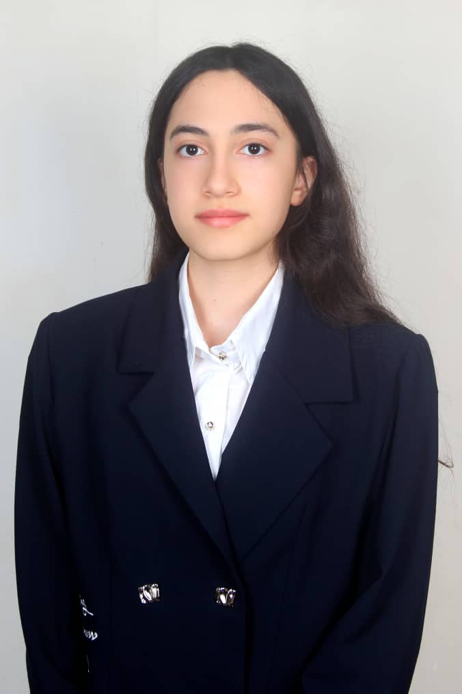
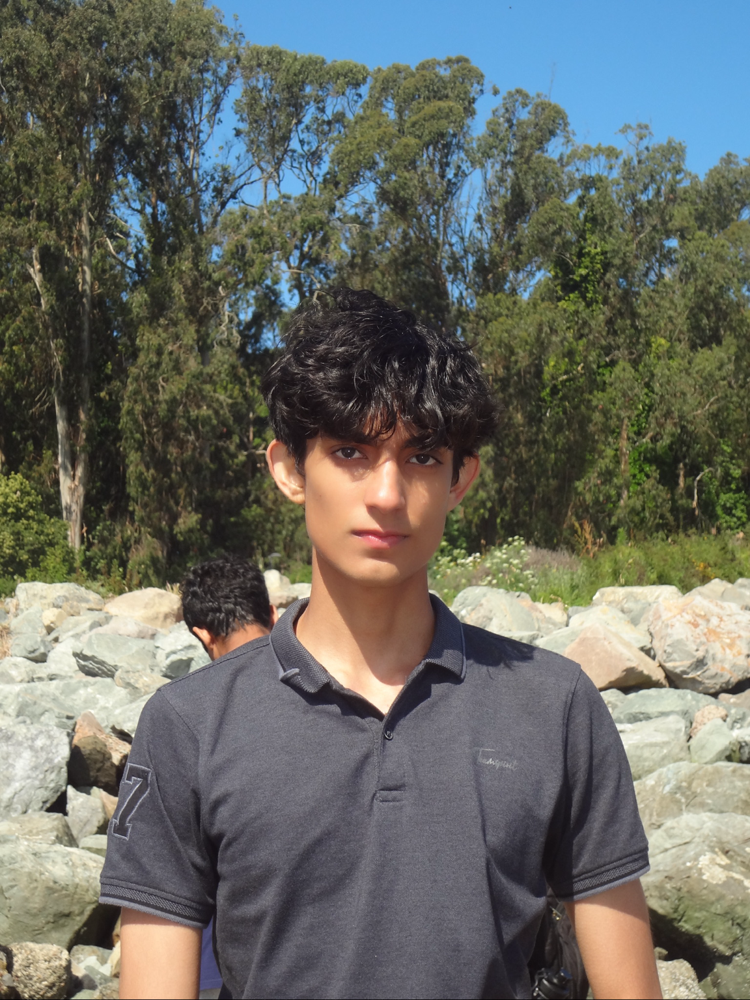
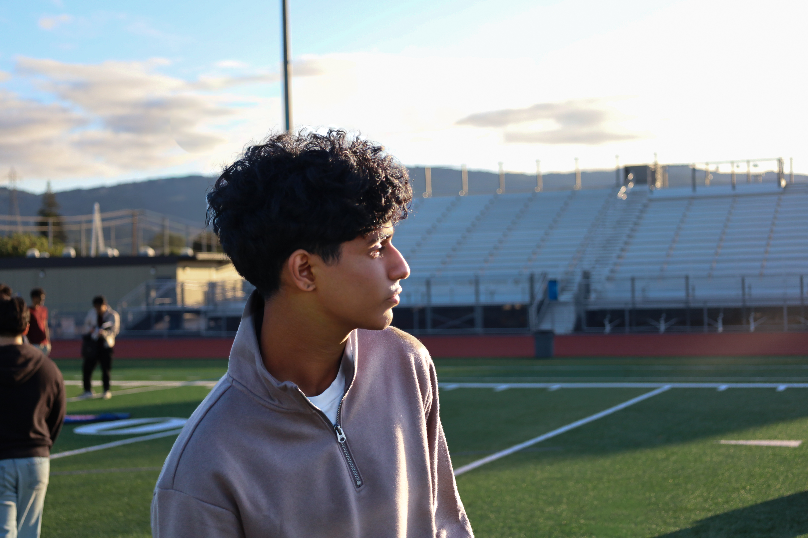
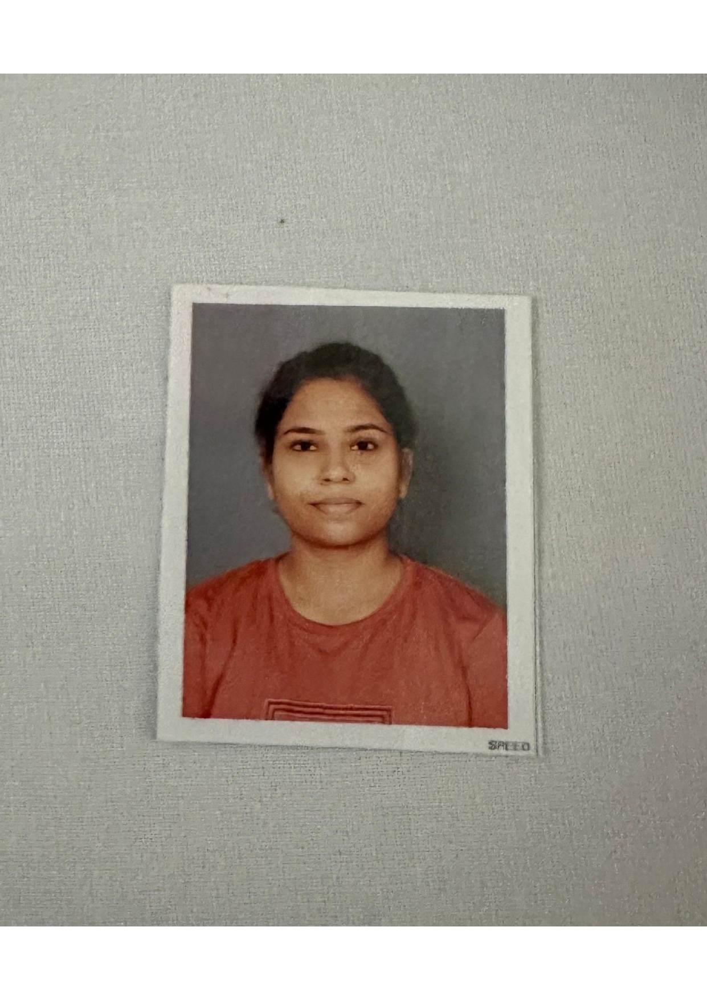
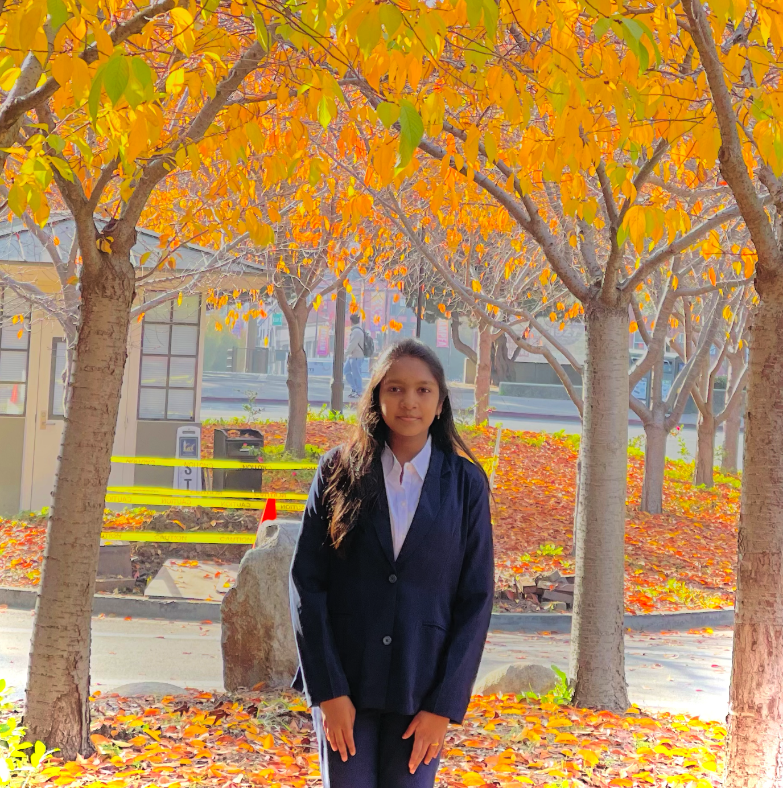
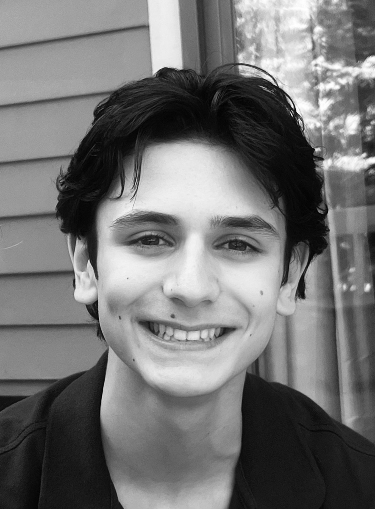
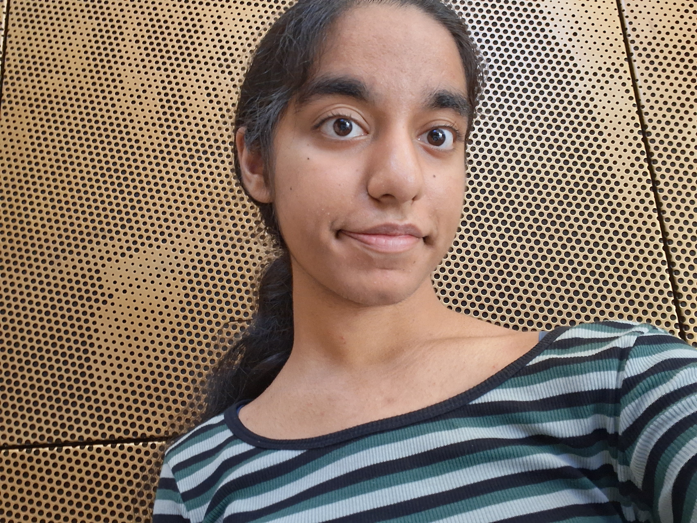

Our Team
Student researchers developing computational methods for PET-degrading enzymes and industrial plastic recycling.
Founders

Ayush Iyer
High school researcher and developer focused on applying artificial intelligence to solve real-world challenges in biotechnology. As the founder of PET Lab, Ayush built a protein engineering platform using protein language models and machine learning to engineer thermostable PETase enzymes for industrial plastic recycling. His work focuses on bridging computational modeling with environmental applications, reducing the time required for enzyme optimization from years to seconds. Beyond PET Lab, Ayush has led multiple technology projects, including a firefighter tracking system and a youth-focused sports platform, reflecting his passion for building scalable, impact-driven solutions.

Abhinav Iyer
Computational biology researcher interested in applying advanced modeling techniques to biological systems. As the co-founder of PET Lab, Abhinav contributes a strong foundation in data analysis, scientific modeling, and biological systems understanding to guide enzyme design and validation for PET degradation. He has conducted research in computational chemistry and genomics, including molecular dynamics simulations of protein structures. His work integrates principles from biology, chemistry, and computation, with the goal of developing innovative solutions to environmental challenges through protein engineering.
Mentors

Ram Bala
Ram Bala is an Associate Professor of AI & Analytics at the Leavey School of Business, Santa Clara University. He holds a Ph.D. in Operations Research from UCLA Anderson and a bachelor's degree in Mechanical Engineering from IIT Bombay. A globally recognized expert in pricing, marketplace design, and supply chain strategy, his work applies optimization, game theory, and machine learning to dynamic markets. He is also the founder of Samvid.ai, where he focuses on advancing AI-driven innovation and autonomous decision-making in organizations.
Leilani Gilpin
Assistant Professor of Computer Science and Engineering at the University of California, Santa Cruz, where she leads the AI Explainability and Accountability (AIEA) Lab. Her research focuses on artificial intelligence, autonomous systems, explainable AI, and methods that enable intelligent machines to understand and explain their decisions. Earned her Ph.D. in Electrical Engineering and Computer Science from MIT, an M.S. in Computational and Mathematical Engineering from Stanford University, and bachelor's degrees in Computer Science and Mathematics from UC San Diego. Previously a research scientist at Sony AI.
Lead Researcher

Rata Radfar
Aspiring biomedical engineer with deep interest in intelligent systems. Currently an intern at Iran's largest medical engineering company, working on 2 out of 3 main projects to develop next-generation ultrasound technology for early Polycystic Kidney Disease (PKD) detection and advanced echocardiography algorithms for automated anomaly detection and real-time hemodynamic monitoring. Actively working on 3 academic papers on AI agent orchestration. Recently secured mayoral approval to implement Project Symbio Membrane, a decentralized, solar-powered filtration system designed to provide safe drinking water to off-grid communities by tackling heavy metals, salt, and microplastics. Long-term goal: improving technology to solve major biomedical and biochemical challenges.
Researchers

Preetam Hegde
Based in the Bay Area with experience in AI research, engineering, robotics, and software development. Research background includes ML and wearable sensing, with presentations at conferences and projects ranging from drone systems to LLM benchmarks. Serves as captain of an FTC team and mentors younger FIRST students, helping grow STEM opportunities in the community and internationally. Passionate about designing, building, and programming systems that create positive impact. In free time, enjoys exploring new technologies, playing video games, working on engineering projects, 3D design, and hanging out with friends.

Sanjeet Jayaseelan
Student researcher and journalist interested in computational biology, healthcare, and large language model research. Student research intern with the University of Pennsylvania, working on medical research reports and synthesizing clinical information across healthcare topics. Also contributes to research at the VA Palo Alto Health Care System, supporting work on virtual reality, simulation-based interventions, and brain activity after post-traumatic stress. Exploring how data, biology, and AI can support meaningful research.

Vasudha Goswami
Biotechnology graduate from GLA University Mathura, India, with strong interests in molecular biology, microbiology, bioinformatics, and healthcare research. Gained hands-on experience through internships at the Stanley Browne Research Laboratory and NITI Aayog, working on clinical sample processing, DNA and RNA extraction, antimicrobial resistance, and biosensors. Passionate about scientific innovation and how biotechnology can solve real-world healthcare challenges. Committed to building a career in research, biotechnology, scientific writing, or healthcare innovation.
Tisha Chatterjee
Biomedical Engineering undergraduate with research interests in artificial intelligence for healthcare, computational biology, neurotechnology, and brain-computer interfaces. Founder of Handheld for PCOS and active contributor to MIT Critical Data, Stanford School of Medicine-backed UCSF projects, and IEEE AP-MTTS Summer Research Program at IIT Kharagpur. Work focuses on developing AI-driven healthcare solutions including medical imaging, bioinformatics, and embedded biomedical systems, bridging engineering, medicine, and data science.
Tapasvi Reddy Marreddi
Student researcher with strong interests in artificial intelligence, machine learning, autonomous systems, computer vision, and intelligent software. Research interests include intelligent agents, optimization, collaborative autonomous systems, and applying AI to scientific and engineering problems. Experience in software engineering and web development, building responsive applications and AI-powered tools. California SkillsUSA Gold Medalist in Web Design & Development and national Top 10 finalist. Passionate about teamwork, perseverance, and developing technology with meaningful real-world impact.
Aryan Goel
Student researcher interested in the implications of AI in the biology space. Fascinated by low-level computing, distributed systems, and compilers. Previously conducted research on photonics technology as a promising alternative to electron-based technology. Excited to combine interests in AI and biology at PET Lab to contribute meaningful research at the intersection of these fields.
Siqi Tan
High school student from Greater Toronto Area, Canada, with passion for biology and technology. Began conducting research at age 12 in cancer biology, topological data analysis, synthetic biology, biomaterials, and biomedical engineering. Recognized nationally and internationally with Canada-Wide Science Fair medal and Team Canada representative at 2026 Regeneron ISEF. Active STEM leader, volunteer, student-athlete, and nonprofit organizer passionate about making research accessible and developing innovations that improve lives.

Katelyn Thilak
High school student with strong interests in biotechnology, synthetic biology, artificial intelligence, and computational biology. Current research focuses on designing synthetic genetic circuits and viral vector-based gene therapies for chronic diseases. Work explores programmable genetic systems that detect disease-specific signals and trigger therapeutic responses only when needed, with applications in cancer treatment and precision medicine. Developed skills in literature review, experimental design, and scientific communication.

Luke Siravakian
Founder of Nishan, a student research institute focused on expanding access to scientific mentorship, collaboration, and publication opportunities. Work centers on building systems that connect students with research communities and translate early scientific ideas into collaborative projects. Contributed to global health initiatives as Quantitative Research and Strategy Analyst with cardiovascular technology nonprofit. Participating in clinical psychology research with Harvard Medical School-affiliated researchers. President of Cornell Biotech XYZ.
Sargun Singh
Fourth-year bioengineering student at Santa Clara University with research and work experience in AI-driven medical imaging and device development. Published work on retinal disease classification using Vision Transformer models presented at SPIE Photonics West 2026. Currently interns at Bezalel Innovations supporting medical device design and validation. Excited to apply machine learning background to protein engineering and condition-aware enzyme development.
Aryan Kohli
High school student drawn to the usages of biology and computation, and how small changes at the molecular level shape real-world function. Interests in protein engineering and bioengineering, connecting computational tools to hands-on science. Experience in wet-lab research and collaborative research teams with skills ranging from lab techniques to CAD design and data analysis. Mentors younger students in STEM and contributes to robotics team development.

Anika Singh
Rising senior IB student at Glenforest Secondary School in Toronto, Canada, passionate about AI, computational biology, and solving meaningful problems with technology. Researcher with MIT CSAIL in computational biology lab, developing embedding-based knowledge systems for biomedical ontologies. STEM leader organizing HerHacks, a beginner-friendly hackathon making technology accessible for girls. Outside technology, enjoys competitive badminton, baking, nature walks, and reading, always excited to explore ideas at science-technology-creativity intersection.
Samay Komarlu
High school student at Dougherty Valley High School (DVHS) with focused interest in computational biology, bioinformatics, and protein engineering/chemistry. Self-taught in Python, applying it to model biological systems and explore programming topics to extend research capabilities. Active member of DVHS Model United Nations club and Science Olympiad team, exploring ways to demonstrate interest in chemistry-influenced fields while building research and argumentative skills. Boy Scout of Troop 621 working toward Eagle Scout rank. Outside academics, enjoys playing video games, hanging with friends, and watching NileRed videos.
Our Mission
PET Lab is an enzyme engineering research platform focused on the global plastic waste crisis. We design thermostable PETase variants for industrial-scale recycling — evaluating catalytic activity, thermal stability, and PET binding at the temperatures used by real recycling plants. Protein language models and gradient-boosted mutation scoring help narrow a large search space into a focused set of candidates for laboratory validation.